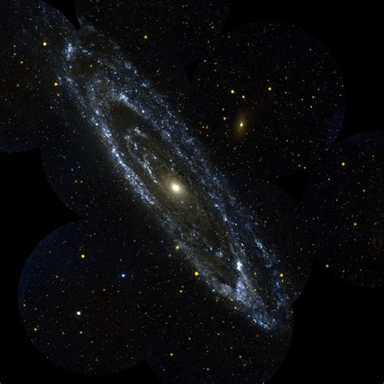
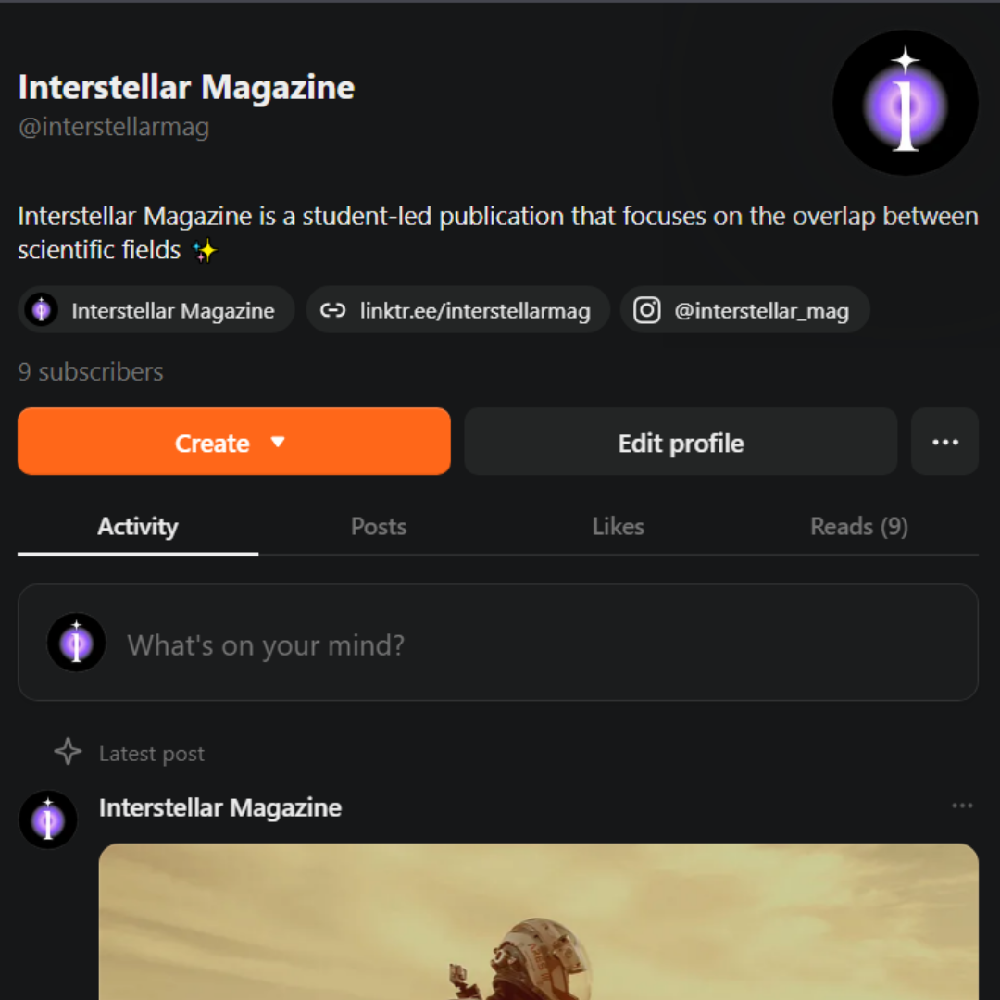

Who are we?
After starting as a newsletter project at University of California's COSMOS in 2025, Interstellar Magazine has become a creative and collaborative endeavour to share STEM topics with the world!
Often, what we think of as 'STEM' gets bogged down in the details. So, we have made it our mission to show genuinely important and fascinating concepts. Straight to your inbox for free, thanks to Substack!
After publishing our first issue in October, Interstellar has grown beyond our wildest dreams. Starting with just a few high school students, we now have an amazing team and we want YOU on it!
Now, we pride ourselves in the quality and topicality of our 20+ articles.
All done by students just like you!
Our articles
... At this point, there is still no image—only a bunch of numerical data. This is where computing becomes essential. The computer uses mathematical techniques such as Fourier transforms to convert the signal data into spatial information ...— "The Computing Behind Medical Imaging" by Evan Ho.
... You eat potato soup every day while taking seismographic readings of Mars. You find that Mars is extremely active seismically, with over 1,300 Marsquakes occurring every year! ...— "You're a Martian Now! Can You Survive?" by Julia Somlo.
... The Autochrome Lumière was a cleverly designed method of capturing images in the full color in which they were seen originally. There is something surreal about seeing these vibrant pictures of life taken over one hundred years ago ...— "The Autochrome: Color Photography in the 1910s" by Helen O'Rand.

Katie's Adventures
Thanks to one of our wonderful artists, we also have an Instagram account detailing the stories and adventures of Katie the astronaut cat!
Katie is on a mission to reunite with her twin from all the way across the universe - follow along with her journey and learn something about space, genes, and how to :3 effectively while you're at it!
Check out @physicscattie on Instagram to learn more :3